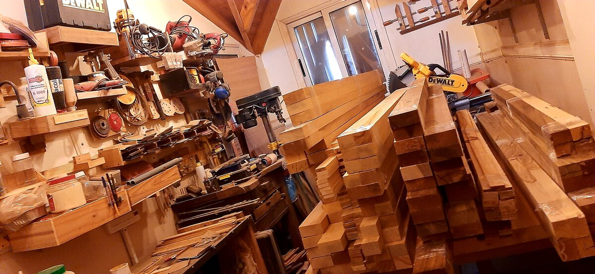

Acerca de Marc Woods
Nuestro compromiso con la artesanía tradicional se evidencia en cada detalle, desde la selección cuidadosa de la madera hasta el meticuloso proceso de elaboración. Al elegir una de nuestras tablas, usted estará adquiriendo más que un simple utensilio de cocina, estará adquiriendo una pieza única y duradera que será la protagonista en su mesa y un acompañante indispensable en sus momentos culinarios más especiales. Descubra la perfecta combinación entre funcionalidad y belleza que solo nuestras tablas de cortar y servir pueden brindarle. Bienvenidos a la excelencia artesanal para su hogar.
Nuestro Taller
Nuestro taller es el corazón latente de la creatividad y el arte detrás de cada tabla de cortar y servir que creamos. Situado en un espacio impregnado de tradición y pasión por la madera, es aquí donde nuestros talentosos artesanos dan vida a sus habilidades y conocimientos. Cada tabla se elabora con dedicación y precisión, seleccionando cuidadosamente las mejores maderas y aplicando técnicas adquiridas a lo largo de más de quince años de experiencia. En nuestro taller, el respeto por la madera y el amor por la artesanía se fusionan para dar como resultado piezas únicas, que encarnan la esencia de la elegancia y la funcionalidad. Estamos orgullosos de ofrecer productos que llevan el alma del taller directamente a su hogar, donde se convertirán en compañeros inseparables en su cocina y en testigos silenciosos de inolvidables momentos compartidos alrededor de la mesa.